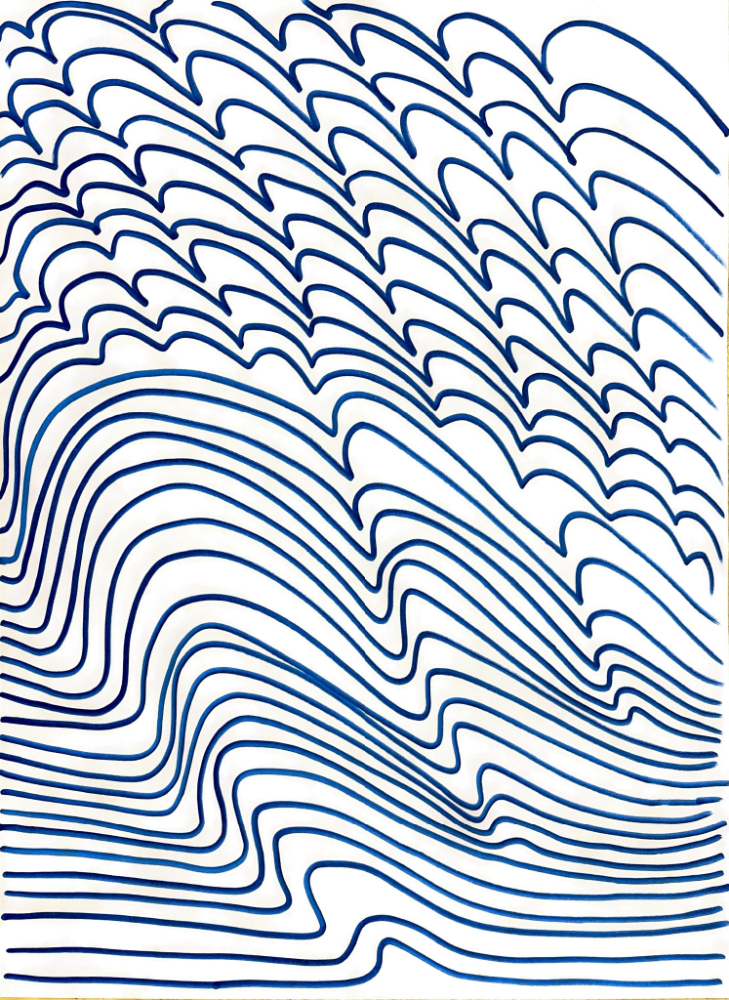
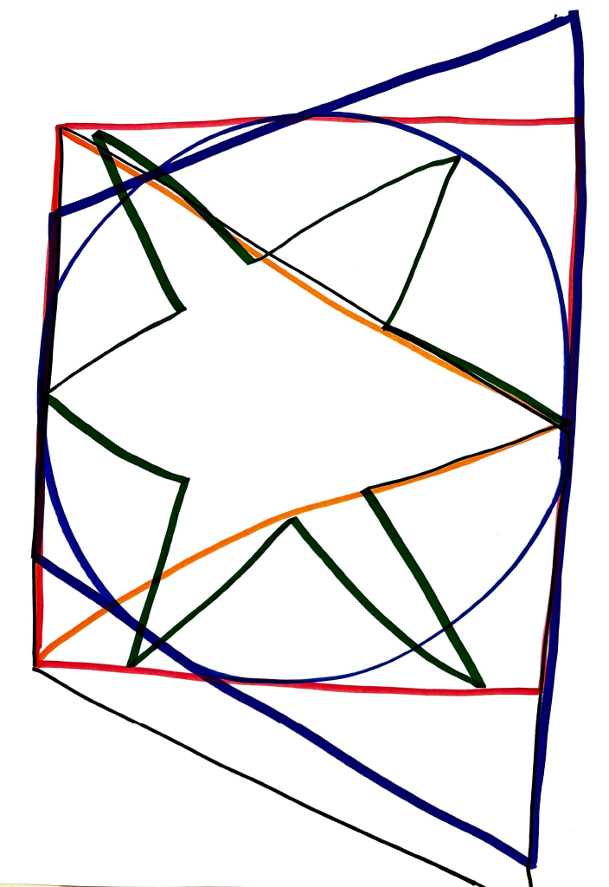
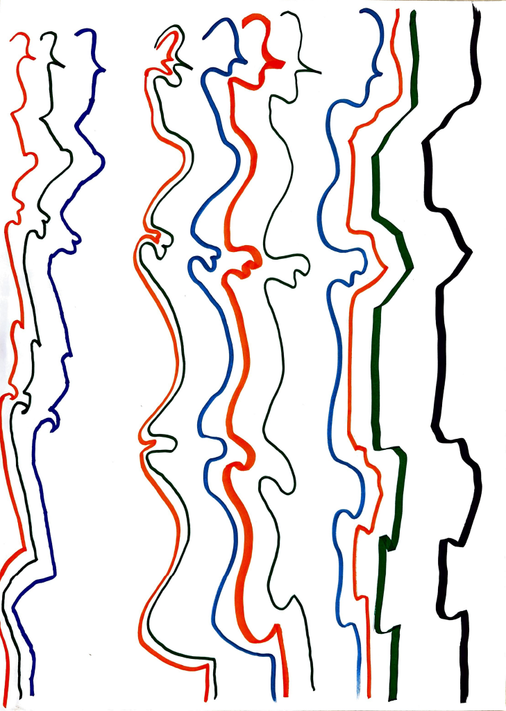
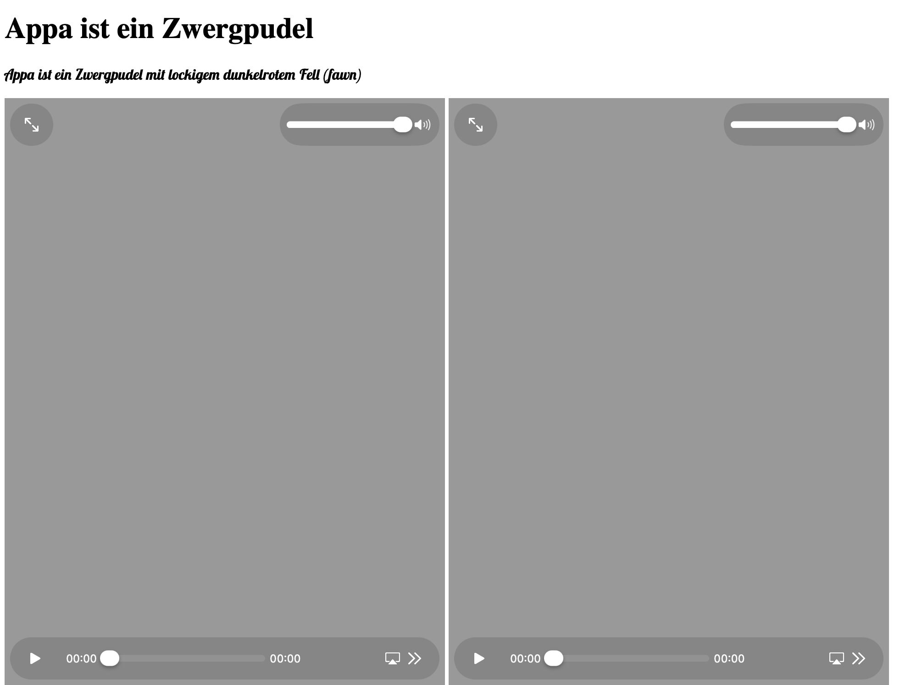
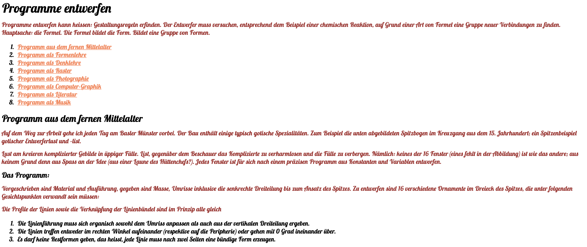

ARCHIVE ENTRY 1.1 — DRAWING ALGORITHMS. This archive entry documents the development of generative drawing systems based on algorithmic instructions. Drawing algorithms allow visual forms to emerge from sequences of computational rules rather than manual gestures alone. By defining loops, conditions, and parameters, digital systems can generate patterns and structures that evolve over time.
ARCHIVE ENTRY 1.1 — DRAWING ALGORITHMS. The experiments recorded within this archive explore how simple algorithmic instructions can produce complex visual results. Repetition, rotation, scaling, and translation were used as fundamental operations to construct generative drawings. Through iterative processes, visual patterns developed that reflect the logic of the underlying code.
ARCHIVE ENTRY 1.1 — DRAWING ALGORITHMS. Unlike traditional drawing methods, algorithmic drawing shifts the role of the designer toward defining processes rather than final images. The designer constructs a system of rules, and the visual output becomes a result of those rules interacting over time.
ARCHIVE ENTRY 1.1 — DRAWING ALGORITHMS. In this exercise, multiple algorithmic approaches were explored including recursive drawing structures, rule-based pattern generation, and parameter-controlled line systems. These approaches demonstrate how computational logic can expand the possibilities of visual experimentation.
ARCHIVE ENTRY 1.1 — DRAWING ALGORITHMS. The resulting drawings often reveal unexpected visual outcomes, highlighting the interplay between control and emergence within generative systems. Small changes in algorithmic parameters can produce dramatically different visual results.
ARCHIVE ENTRY 1.1 — DRAWING ALGORITHMS. The archive therefore documents not only the visual results of these experiments but also the conceptual processes behind them. Algorithmic drawing becomes a tool for exploring the relationship between mathematics, computation, and visual form.
ARCHIVE ENTRY 1.1 — DRAWING ALGORITHMS. This archive entry documents the development of generative drawing systems based on algorithmic instructions. Drawing algorithms allow visual forms to emerge from sequences of computational rules rather than manual gestures alone. By defining loops, conditions, and parameters, digital systems can generate patterns and structures that evolve over time.
ARCHIVE ENTRY 1.1 — DRAWING ALGORITHMS. The experiments recorded within this archive explore how simple algorithmic instructions can produce complex visual results. Repetition, rotation, scaling, and translation were used as fundamental operations to construct generative drawings. Through iterative processes, visual patterns developed that reflect the logic of the underlying code.
ARCHIVE ENTRY 1.1 — DRAWING ALGORITHMS. Unlike traditional drawing methods, algorithmic drawing shifts the role of the designer toward defining processes rather than final images. The designer constructs a system of rules, and the visual output becomes a result of those rules interacting over time.
ARCHIVE ENTRY 1.1 — DRAWING ALGORITHMS. In this exercise, multiple algorithmic approaches were explored including recursive drawing structures, rule-based pattern generation, and parameter-controlled line systems. These approaches demonstrate how computational logic can expand the possibilities of visual experimentation.
ARCHIVE ENTRY 1.1 — DRAWING ALGORITHMS. The resulting drawings often reveal unexpected visual outcomes, highlighting the interplay between control and emergence within generative systems. Small changes in algorithmic parameters can produce dramatically different visual results.
ARCHIVE ENTRY 1.1 — DRAWING ALGORITHMS. The archive therefore documents not only the visual results of these experiments but also the conceptual processes behind them. Algorithmic drawing becomes a tool for exploring the relationship between mathematics, computation, and visual form.
ARCHIVE ENTRY 1.1 — DRAWING ALGORITHMS. This archive entry documents the development of generative drawing systems based on algorithmic instructions. Drawing algorithms allow visual forms to emerge from sequences of computational rules rather than manual gestures alone. By defining loops, conditions, and parameters, digital systems can generate patterns and structures that evolve over time.
ARCHIVE ENTRY 1.1 — DRAWING ALGORITHMS. The experiments recorded within this archive explore how simple algorithmic instructions can produce complex visual results. Repetition, rotation, scaling, and translation were used as fundamental operations to construct generative drawings. Through iterative processes, visual patterns developed that reflect the logic of the underlying code.
ARCHIVE ENTRY 1.1 — DRAWING ALGORITHMS. Unlike traditional drawing methods, algorithmic drawing shifts the role of the designer toward defining processes rather than final images. The designer constructs a system of rules, and the visual output becomes a result of those rules interacting over time.
ARCHIVE ENTRY 1.1 — DRAWING ALGORITHMS. In this exercise, multiple algorithmic approaches were explored including recursive drawing structures, rule-based pattern generation, and parameter-controlled line systems. These approaches demonstrate how computational logic can expand the possibilities of visual experimentation.
ARCHIVE ENTRY 1.1 — DRAWING ALGORITHMS. The resulting drawings often reveal unexpected visual outcomes, highlighting the interplay between control and emergence within generative systems. Small changes in algorithmic parameters can produce dramatically different visual results.
ARCHIVE ENTRY 1.1 — DRAWING ALGORITHMS. The archive therefore documents not only the visual results of these experiments but also the conceptual processes behind them. Algorithmic drawing becomes a tool for exploring the relationship between mathematics, computation, and visual form.
REDACTED
Screenshots






Exercise
In diesem Block wurden mehrere Aufgaben bearbeitet, welche grundsätzlich den ersten Einstieg in das Webdesign bieten sollten.
Dabei wurden zunächst anhand des Künstlers Sol Lewitt Algorithmen zu Papier gebracht und später in Teams gemeinsam gezeichnet.
Anschließend sollte mithilfe der Einführung in das "styling" von Webseiten in eine vorgegebene Seite im CSS verändert werden.
Zusätzlich erstellten wir unsere erste eigene HTML-Website, welche ich später für das Portfolio nochmmals deutlich überabreitet habe.
Abschließend gab es die Aufgabe im CSS zu zeichnen.
Idea
Grundsätzlich hatte ich bei keiner Aufgabe eine konkrete Idee. Stattdessen habe ich angefangen viele Dinge auszuprobieren.
Beim Styling der vorgebenen Webseite habe ich nur minimale Dinge verändert. Ich bin generell nicht der Fan von maximalen Veränderungen und arbeite eher minimalistisch.
Bei der Aufgabe eine eigene HTML-Seite zu erstellen, habe ich schließlich meinen Fokus auf die Einbindung von Videos gelegt.
Das Zeichnen im CSS war eine sehr experimentelle Aufgabe, bei der ich die Cola-Flasche von meinem Tisch "abzeichnen" wollte.
Reflection
Bis auf eine Aufgabe fiel mir alles recht leicht, wobei ich allerdings wenige Ideen hatte. Ich persönlich erkenne beispielsweise im Zeichnen der Algorithmen wenig Mehrwert.
Die Erstellung einer ersten eigenen Wesbite hat mir jedoch recht viel Spaß gemacht, sodass ich diese abschließend noch so gebaut habe, wie ich sie mir eigentlich vorgstellt hatte. Die Website soll meinen Welpen Appa zeigen. Dadurch dass ich viel fotografiere, hatte ich viele schöne Bilder die ich wie eine Art Portfolio einbauen konnte.
Das größte Problem war für mich das Zeichnen im CSS. Es hat mir von Beginn an wenig Spaß gemacht, da es sich wie wirkliche Fummelarbeit angefühlt hat. Zudem half es gar nicht, dass eine halbwegs ansehnliche Version meiner Cola-Flasche versehentlich gelöscht wurde.
Schlussendlich musste ich nochmal von vorne anfangen. Die Kombination aus technischen Problemen, meiner Ideenlosigkeit im CSS zu zeichnen und dem Gefühl bei jeder Veränderungen im CSS mehr kaputt zu machen als zu verbessern, führte dazu, dass ich die Aufgabe als frustrierend empfand.